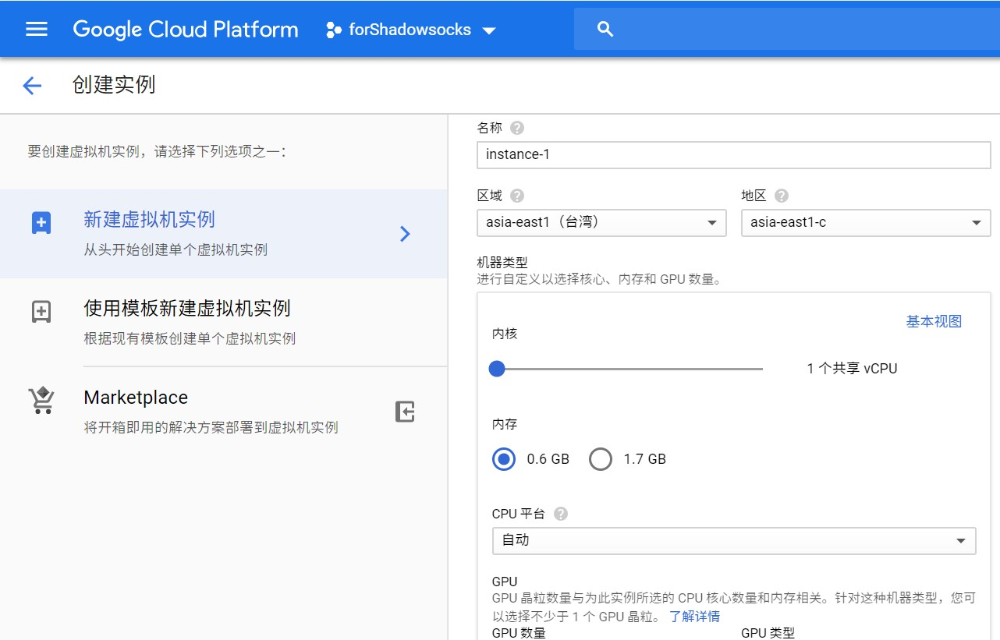
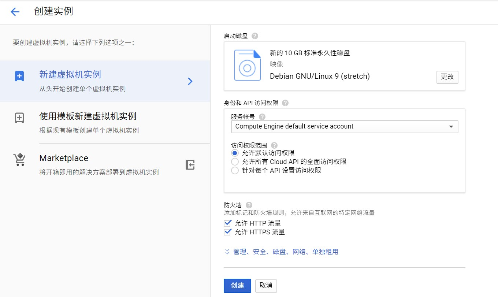
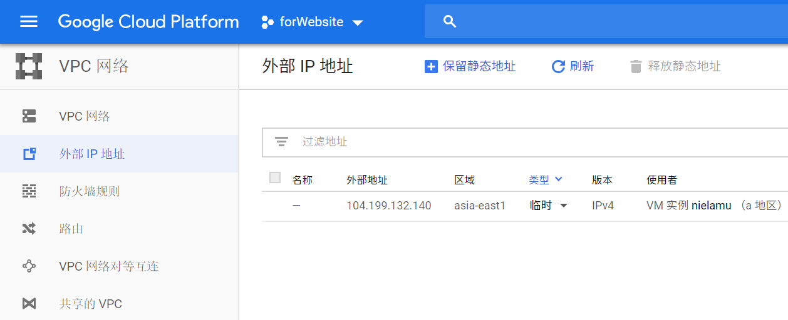
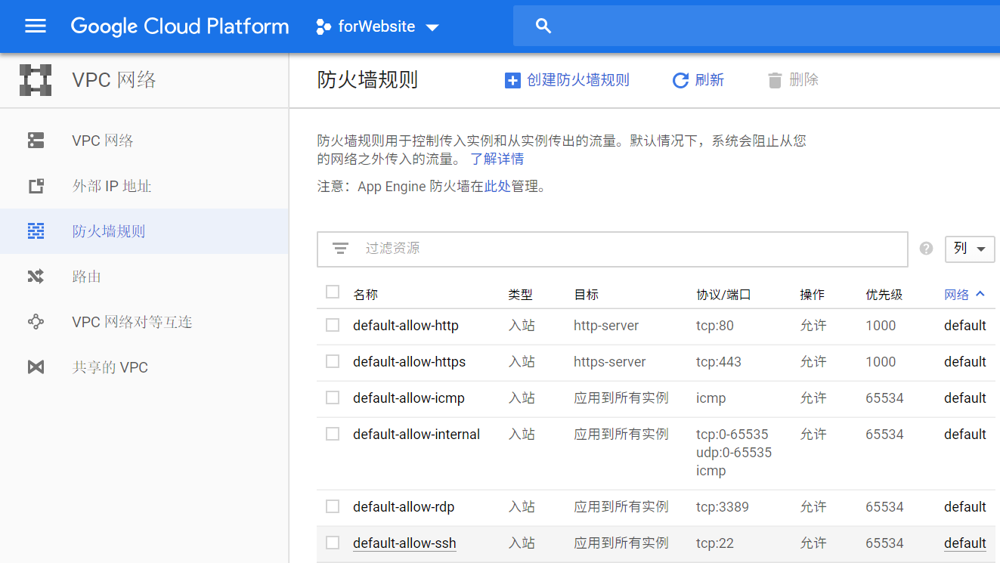
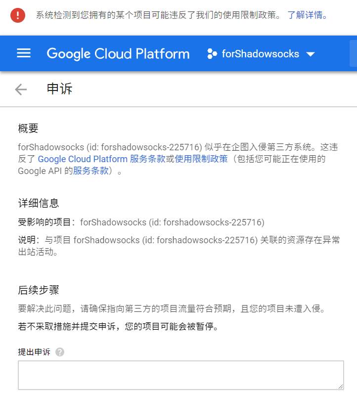

截至2019年3月，搬瓦工的openVZ架构VPS全部下线，最低价$49.99/yr的服务器也卖光了。在vultr上为公司搭建的Shadowsocks服务又导致IP经常被封（正值x会期间），实在折腾不起，所以转投GCP(Google Cloud Platform)。
GCP使用外币信用卡开通可享受含300美元赠金的12个月免费试用，系统会在您的免费赠金用完或过期（二者取其先）后向您收取费用。
创建和配置Computer Engine实例
创建实例
Computer Engine相当于阿里云的ECS，也就是虚拟机（服务器），可以根据需求选择配置。
如果身在中国大陆，区域最好选择asia-east1（台湾），地区选择asia-east1-a或asia-east1-c。机器类型根据需求选择，一般不作它用时最低配置即可。

启动磁盘是预装的操作系统，按需选择，一般选择Ubuntu 18.04 LTS；勾选防火墙下的允许 HTTP 流量和允许 HTTPS 流量。

配置实例
设置静态IP
在VPC网络-外部IP地址中，将临时IP类型改为静态。

设置防火墙规则
默认规则如下：

！注意：防火墙按需配置。千万不要按照某些教程所说，将“入站、出站，来源ip地址0.0.0.0/0、协议和端口全部允许”，这样会造成很大的安全隐患！
配置密码登录SSH
在/etc/ssh/sshd_config中:
PasswordAuthentication yes
# 必须开启root登录，否则使用sudo时会报username is not in the sudoers file，加进文件也不管用。
PermitRootLogin yes
sudo /etc/init.d/ssh restart
安全问题
在如上配置（防火墙全部打开），并部署V2Ray后不久，收到了GCP的邮件，内容如下：
We have recently detected that your Google Cloud Project XXX has been performing intrusion attempts against a third-party and appears to be violating our Terms of Service. Specifically, we detected bruteforcing attacks on 22 originating from xxx targeting more than 2309 IP addresses between 2019-03-18 09:20 and 2019-03-18 09:59 (Pacific Time). Please check the traffic originating from all your instances and fix any other instances that may be impacted by this.
猜测是被破解了密码并挂了木马（当时root密码设置得非常简单）。根据要求做了申诉：

通知邮件中给出的原因为我的实例向多个IP发起了攻击，我本人并未有这样的行为。查看实例状态监控发现，在所述时段确实有异常流量出入。推测可能是因为实例被他人攻破密码，进行了非法的操作。
我建立这个实例是为了搭建小型测试网站，发生这样的问题后，我会将实例重置，设置强密码，并且安装入侵保护软件。
部署和配置V2ray
V2ray官网的文档比较详细，但对初次部署和配置来说略显复杂且难懂。可以按照官网文档来安装，再按照V2Ray 白话文教程来配置。
下载安装
Linux
# 官方脚本安装
bash <(curl -L -s https://install.direct/go.sh)
# 启动
service v2ray start
# 更新
bash go.sh
Windows
在V2Ray releases下载zip包解压即可。
配置文件
主要配置服务端的inbounds字段和客户端的outbounds字段、Shadowsocks协议和VMess协议，其它字段和协议保持安装后默认生成的即可。
服务端
// etc/v2ray/config.json
{
"inbounds": [{
"port": 2019, // V2Ray配置json文件支持注释
"protocol": "shadowsocks",
"settings": {
"method": "aes-256-cfb",
"ota": false,
"password": "yourPwd"
}
},{
"port": 28068,
"protocol": "vmess",
"settings": {
"clients": [
{
"id": "ce368dff-107c-4246-bcda-e7d",
"level": 1,
"alterId": 64
}
]
}
}]
}
客户端
// config.json
{
"outbounds": [
{
"protocol": "vmess", // 出口协议
"settings": {
"vnext": [
{
"address": "1.1.1.1", // 服务器IP或域名
"port": 28068, // 服务器端口
"users": [
{
"id": "ce368dff-107c-4246-bcda-e7d", // 用户 ID，必须与服务器端配置相同
"alterId": 64 // 此处的值也应当与服务器相同
}
]
}
]
}
},{
"protocol": "shadowsocks",
"settings": {
"servers": [
{
"address": "1.1.1.1", // 服务器IP或域名
"method": "aes-256-cfb", // Shadowsocks的加密方式
"ota": true, // 是否开启 OTA，true为开启
"password": "yourPwd",
"port": 2019 // 服务器端口
}
]
}
}]
}
关于协议配置顺序
- V2Ray的
inbounds和outbounds是按顺序优先匹配的，多个协议满足条件会以第一个匹配的为准。 - 一般同时使用V2Ray客户端和V2Ray服务端，最好保持客户端
outbounds的第一个协议和服务端inbounds的某一个协议相同。（严格来说V2Ray不区分客户端和服务端，只关注数据流向。） - 如使用V2Ray客户端连接Shadowsocks服务端，需在客户端将Shadowsocks协议配置为
outbounds中第一个。 - 如使用Shadowsocks客户端连接V2Ray服务端，需在服务端将Shadowsocks协议配置为
inbounds中第一个。注意可能需配置"ota": false，参见Shadowsocks协议 1.1.3. 注意事项。